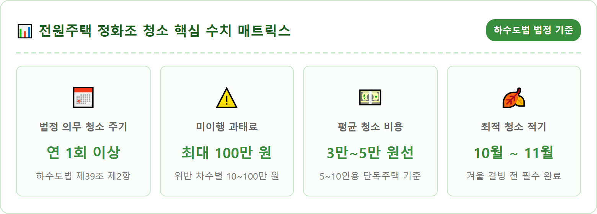
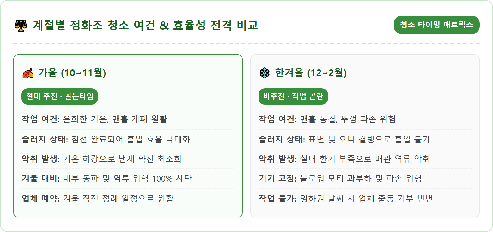
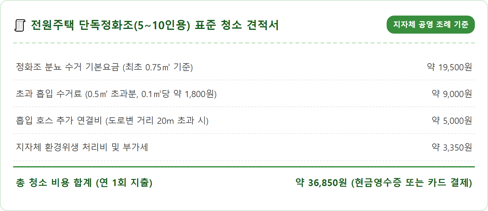
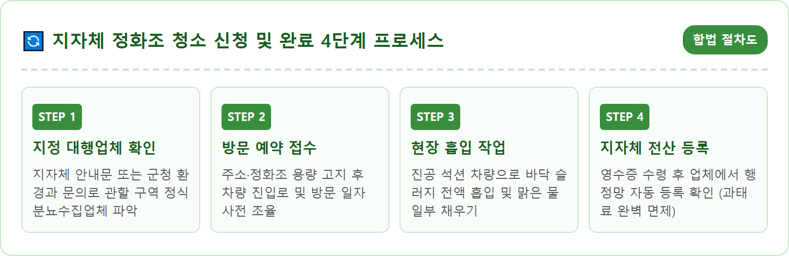
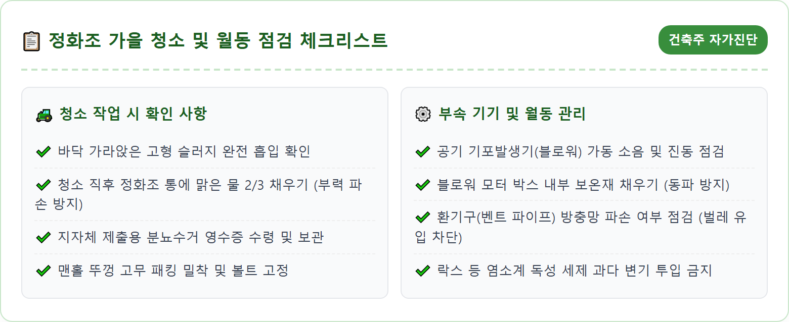
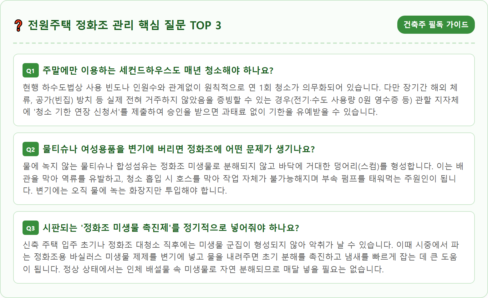

A photorealistic eye-level shot of a modern countryside home garden in South Korea during autumn. A municipal certified septic tank service vacuum truck is parked neatly by the driveway, with a professional technician wearing clean protective uniform and gloves connecting suction hose safely to the underground septic tank manhole. Well-manicured autumn lawn, golden leaves gently falling, crisp morning atmosphere, bright clean lighting, ultra-high resolution, 8k, detailed realistic mechanical and garden textures, 1:1 aspect ratio.





